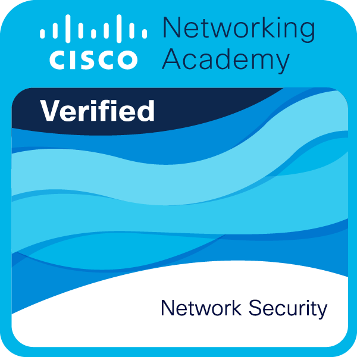
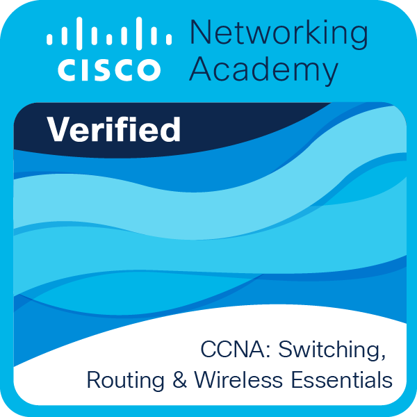
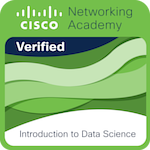
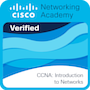

Certificaciones Cisco

Network Security
Cisco Networking Academy
Seguridad de redes, amenazas, mitigación y buenas prácticas.
Issued May 26, 2025

CCNA: Switching, Routing, and Wireless Essentials
Cisco Networking Academy
Switching, routing, redes inalámbricas y troubleshooting básico.
Issued Dec 7, 2023

Introduction to Data Science
Cisco Networking Academy
Análisis de datos, visualización y pensamiento analítico.
Issued Oct 17, 2023

CCNA: Introduction to Networks
Cisco Networking Academy
Fundamentos de redes, OSI/TCP-IP y direccionamiento IP.
Issued May 30, 2023
Otras Certificaciones
AWS Academy Graduate – Introduction to Cloud
Amazon Web Services Training and Certification
Introducción a cloud computing, servicios AWS y modelos de despliegue.
Issued Nov 5, 2024
Reforzar la posición de seguridad con Microsoft Defender for Cloud y Microsoft Sentinel
Microsoft Learn
Implementación de seguridad en la nube mediante Defender for Cloud y Sentinel,
detección de amenazas y monitoreo.
Completed Nov 26, 2025
Protección del proceso, el almacenamiento y las bases de datos
Microsoft Learn
Protección de datos y procesos en Azure, control de acceso y
seguridad de almacenamiento.
Completed Nov 26, 2025
Protección de la infraestructura de red en Azure
Microsoft Learn
Seguridad de redes en Azure, firewalls, NSG, monitoreo y
control de tráfico.
Completed Nov 26, 2025
AZ-500: Protección de la identidad y el acceso
Microsoft Learn
Gestión de identidades, control de accesos, autenticación y
autorización en Azure.
Completed Nov 24, 2025